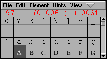
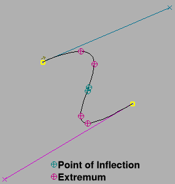

The View Menu
- Fit
- Zoom Out
- Zoom In
- Insert Glyph Before...
- Insert Glyph After...
- Replace Glyph...
- Next Glyph
- Prev Glyph
- Next Defined Glyph
- Prev Defined Glyph
- Former Glyph
- Substitutions
- Goto
- Find In Font View
- Show ATT
- Display Substitutions
- Combinations
- Label Glyph By
- View H. Metrics...
- View V. Metrics...
- 32x8 cell window
- 16x4 cell window
- 8x2 cell window
- 24 pixel outline
- 36 pixel outline
- 48 pixel outline
- 72 pixel outline
- 96 pixel outline
- AntiAlias
- Vertical
- Fit To Em
- Bitmap Magnification...
- <list of bitmap pixel sizes, if any>
- Show/Hide Grid
- Outline
- Show/Hide Points
-
Number Points
- None
- TrueType
- PostScript
- SVG
- Mark Extrema
- Mark Points of Inflection
- Show Control Point Info
- Fill
- Show Grid Fit...
- Bigger Pixel Size
- Smaller Pixel Size
- Palettes
- Show/Hide Rulers
- Fit
- In the outline and bitmap views this will scale the current glyph to the largest setting where it all fits in the view.
- Zoom Out
- Not in the font view. Centered on the middle selection if there is one, else the middle of the view.
- Zoom In
- Not in the font view. Centered on the middle selection if there is one, else the middle of the view.
- Next Glyph
-
In the metrics, outline and bitmap view this changes the current glyph to
be the next one in the font.
In the font view this selects the next glyph in the font (and scrolls, if necessary, to display that glyph).
- Prev Glyph
-
In the metrics, outline and bitmap view this changes the current glyph to
be the previous one in the font.
In the font view this selects the next glyph in the font (and scrolls, if necessary, to display that glyph).
- Next Defined Glyph
- Similar to Next Glyph, except it moves to the next glyph defined in the font.
- Prev Defined Glyph
- Similar to Prev Glyph, except it moves to the previous glyph defined in the font.
- Former Glyph
- Changes the glyph window to look at whatever glyph was being edited there before this one (one level of history).
- Substitutions
-
Brings up a sub menu showing all the GSUB type 1 and type 3 substitutions
(simple and alternate) you have defined for the selected glyph and allows
you to change the glyph as directed by the substitution. Also contains an
entry to return you to the original glyph.
Substitutions may be set with the Element->Glyph Info command.
-
Goto
Replace Glyph... -
In the Font, Outline, Bitmap and Metrics views this brings up a dialog in
which you may type either:
- A name of a glyph in the current font
- A number (in either decimal or hex) indicating the glyph you are interested in, in the current encoding
- A hex number ,preceded by "U+" or "uni" or "u", indicating the character you are interested in in unicode.
- A decimal number, preceded by "glyph" ,indicating the glyph index in the original glyph list.
- A ku ten representation of a CJK font (two comma separated numbers)
- A standard name (which need not be used in the current font) but which can be mapped to a unicode value.
- For 2/4 byte encodings you will also be shown a pull-down list of unicode ranges (Things like "Greek", "Katakana", "Hangul Compatibility Jamo") and you can select one of the range names.
-
Arabic letters may also be named as:
afii57442.isolatedor0x642.initial - A single unicode character
In the font view the view will scroll so that this glyph is visible and it will be selected
In the bitmap, outline and metrics views, the current glyph will change to be the one specified.
-
Insert Glyph Before...
Insert Glyph After... - In the metrics view this brings up a dialog similar to the previous one allowing you to enter a glyph by name or encoding either before or after the currently selected position.
- Find In Font View
- In the outline, bitmap and metrics views this will scroll the associated font view so that the current glyph is displayed (and selected) in the fontview.
- Show ATT
- Only in the font view. Brings up a dlg showing the advanced typographic tables (GPOS/GSUB or morx/kern) that FontForge supports.
- Display Substitutions
-
Only in the font view. This allows you to select a simple substitution, any
glyph with that substitution attached will be displayed as the substituted
glyph. Any glyph without such a substitution will be left blank. Double clicking
on a glyph will either go the the substituted version or will create a
substituted version and go to that. (However almost no other commands will
be aware of this mapping, which will probably be confusing).
Displaying small caps ('smcp' substitution) 
 - Combinations
-
A submenu containing
- Kern Pairs
- This brings up a dialog showing all kerning pairs in the current font (or, if invoked from the outline glyph view, a list of all kerning pairs involving that glyph). You may alter kerning pairs here too.
- Anchored Pairs
-
This may have a sub-menu of its own containing all the anchor classes for
this font and an entry "All". You may choose to see all combinations of glyphs
from a given anchor class, or all combinations from all anchored classes.
If invoked from the outline glyph view it will provide a list of all anchored combinations involving that glyph.
Selecting a combination and double clicking on it will bring up an Anchor Control dialog. - Anchor Control
- Only in the outline view. Has a submenu of all anchor points in this glyph. Selecting one brings upt the Anchor Control dialog.
- Anchor Glyph at Point
- Only in the outline view. Allows you to attach and display another glyph at the selected anchor point.
- Ligatures
- This brings up a dialog showing the names of all ligatures and of the glyphs that compose them (if invoked from the outline glyph view, a list of all ligatures containing that glyph). Double clicking on an entry will bring up a window showing that ligature.
- Label Glyph By
-
In the font view each glyph has a label above it. This may be either:
- An image of the glyph (from a conventional font)
- The name of the glyph
- The unicode code point associated with the glyph
- The glyph's encoding (in hex)
Note that when the glyphs are small (the 24 pixel view, for example) there may not be room for the entire name of each glyph (or even for the encoding), so the labels may be truncated.
- View H. Metrics...
- In the font view this will control which of the the horizontal metrics lines are draw across the displayed glyphs. In the outline glyph view the same functionality is available from one of the palettes. See the font view for more information
- View V. Metrics...
- In the font view this will control which of the vertical metrics lines are draw across the displayed glyphs. In the outline glyph view the same functionality is available from one of the palettes. (This will be greyed out if your font does not have vertical metrics in it). See the font view for more information
- 32x8 cell window
- In the font view you may explicitly set the window size so that there are 32 glyph cells horizontally and 8 vertically.
- 16x4 cell window
- In the font view you may explicitly set the window size so that there are 16 glyph cells horizontally and 4 vertically.
- 8x2 cell window
- In the font view you may explicitly set the window size so that there are 8 glyph cells horizontally and 2 vertically.
- 24 pixel outline
-
In the font view you may choose how large you want the rasterized representation
of the outline view to be. The default is to rasterize it on a 24 pixel block.
If this item is checked then a 24 pixel version of the outline font is displayed,
selecting it will display a 24 pixel version of the font.
(Exactly one em-square of the glyph will be displayed, if the glyph extends above the ascent or below the descent those features will be clipped) - 36 pixel outline
- Similar to the above but for a 36 pixel version.
- 48 pixel outline
- Similar to the above but for a 48 pixel version.
- 72 pixel outline
- Similar to the above but for a 72 pixel version.
- 96 pixel outline
- Similar to the above but for a 96 pixel version.
- AntiAlias
- Only in the font and metrics view. Toggles between whether the font displayed in the view is a bitmapped font or an anti-aliased font. An Anti-aliased font shows levels of grey rather than just black and white. It often looks better than a bitmap, but it is slower to generate and draw.
- Vertical
- Only in the metrics view. Toggles between displaying horizontal and vertical metrics. (Only available if Element->Font Info->General->Has Vertical Metrics is set).
- Fit To Em
-
Only in the font view. The fontview will either display glyphs scaled so
that the font's bounding box fits in the window, or so that the em fits in
the window. The advantage of the first method is that you see all of each
glyph, the advantage of the second is that you can see how the letter sizes
compare from font to font.
(This is something of a simplification. In bounding box mode the displayed font is scaled so that the vertical size (as found in the bounding box) fits it the window. Very wide glyphs will still not fit horizontally. Also the scaling is not updated when glyphs change, if you have changed the maximum bounds of the font you might want to force a rescale by toggling this mode)
- Bitmap Magnification...
- In the font view. When displaying a bitmap font it is sometimes desirable to look at the font with a greater magnification than normal.
- <list of bitmap pixel sizes, if any>
-
In the font view or metrics view there is a list of all generated bitmap
fonts. You may select to have one of them displayed in the view rather than
a rasterized version of the outline font. If one is checked then that one
is currently displayed, if you select one then it will be displayed.
In CID keyed fonts this list will not be present.
If your font database includes some greymap fonts then these will be listed here too, as usual they will be displayed as <pixel-size>@<bits-per-pixel> - Show/Hide Grid
- In the Metrics View there is no layers palette. This entry allows you to turn on or off the lines marking the edges of the glyphs on display.
- Outline
- In the Metrics View this will be checked when the outline font is bring displayed. Selecting it will display the outline font (rather than a bitmap font).
- Show/Hide Points
- This hides or displays the points in the outline glyph view.
- Number Points
- In the Outline view, this small sub-menu allows you to control whether point numbers are displayed next to points in the foreground view. This is primarily for TrueType, where the instructions use these numbers to refer to the points when they do grid-fitting. The numbering scheme is a little different depending on what the expected output (input) will be, so we have a sub-menu listing output types.
- Mark Extrema
- In the Outline view, in postscript and truetype fonts (in almost all cases) should have their horizontal and vertical extrema at the endpoints of splines. This setting will mark extremal endpoints by coloring them a dull purple to remind you that you should not delete them. If an extremum occurs somewhere other than an end point a crosshair will be drawn around it. You might consider doing Element->Add Extrema in this case (or you might not, this can be ok in some cases).
- Mark Points of Inflection
- In the Outline view, points of inflection occur where the change in the slope of the curve (second derivative) changes sign. Quadratic splines (truetype) cannot represent points of inflection. If you have a postscript font which you intend to convert to truetype it can be helpful to know where these difficult points lie. (the cubic->quadratic approximation routines will often add intermediate points at these points of inflection)
- Show Control Point Info
- In the Outline view, when you move a control point this mode pops up a little window showing various bits of information about the control point you are editing.
- Fill
- In the Outline view this fills in the glyph outline as you edit it. (this can be very slow. If the glyph is too big (too magnified) then filling will not be done).
- Show Grid Fit
- In the Outline view and only if the freetype library is available. Brings up a dialog which allows you to control whether a grid fit version of the splines in the font is displayed.
- Bigger Pixel Size
- In the bitmap view this displays the current glyph in next larger bitmap font (if there is one)
- Smaller Pixel Size
- In the bitmap view this displays the current glyph in next smaller bitmap font (if there is one)
- Palettes
-
- Tools
- If this item is checked then the tools palette (in the outline and bitmap views) is visible. Selecting it toggles whether the palette is visible or not.
- Layers
- If this item is checked then the layers palette (in the outline and bitmap views) is visible. Selecting it toggles whether the palette is visible or not.
- Shades
- Only in the bitmap view, and only if editing grey-scale (anti-aliased) fonts. Controls whether the shades of grey palette is visible or not.
- Dock Palettes
-
Allows you to control whether you want the palettes free standing or docked
in the current view.
The window manager under gnome does not handle this properly. If you want docked palettes under gnome: Open a window with palettes, select docked palettes (the palettes will not dock), close the window, reopen the window. The palettes are now docked and should be from here on.
- Show/Hide Rulers
- In the Glyph Outline View toggles whether rulers appear at the top and to the left of the editing area.
Other menus